Risk graphs — Sunday, November 15, 2026
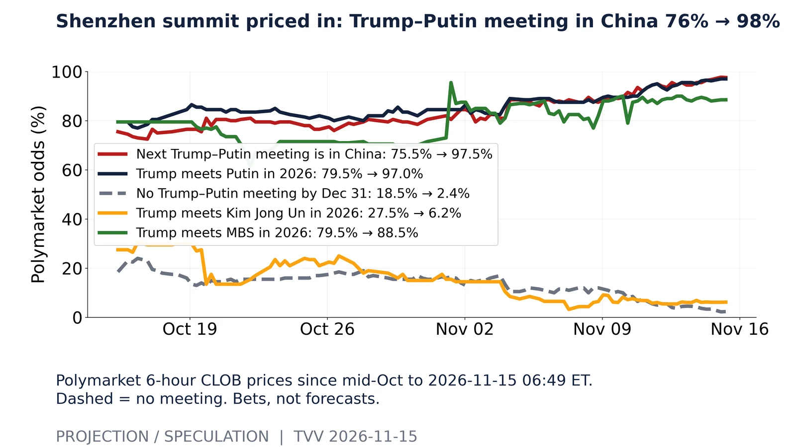
Shenzhen summit priced in: Trump–Putin meeting in China 76% → 98%. Polymarket 6-hour CLOB prices since mid-Oct to 2026-11-15 06:49 ET. Dashed = no meeting. Bets, not forecasts.
Source: https://polymarket.com/event/where-will-trump-and-putin-meet-next-678
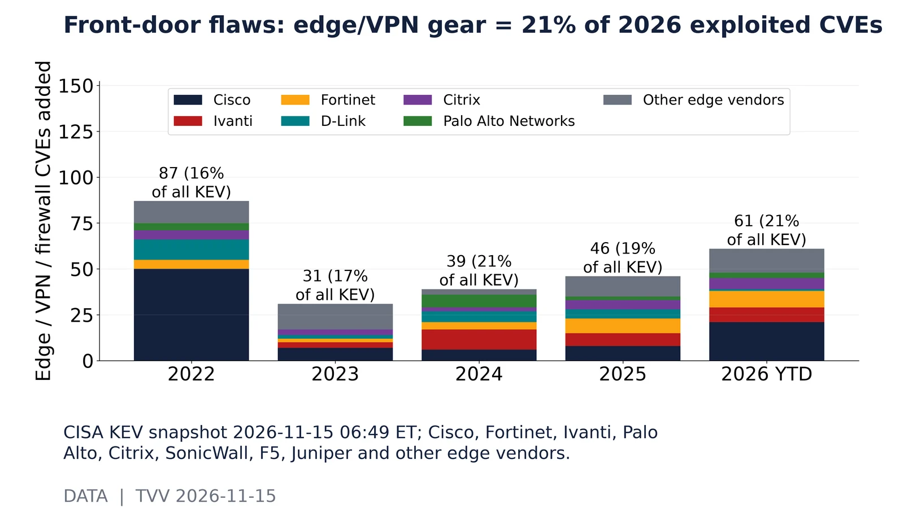
Front-door flaws: edge/VPN gear = 21% of 2026 exploited CVEs. CISA KEV snapshot 2026-11-15 06:49 ET; Cisco, Fortinet, Ivanti, Palo Alto, Citrix, SonicWall, F5, Juniper and other edge vendors.
Source: https://www.cisa.gov/known-exploited-vulnerabilities-catalog
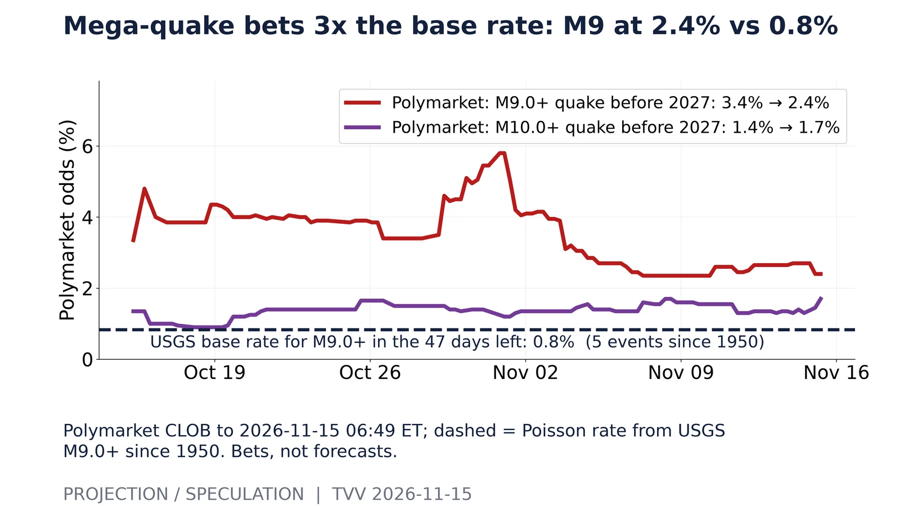
Mega-quake bets 3x the base rate: M9 at 2.4% vs 0.8%. Polymarket CLOB to 2026-11-15 06:49 ET; dashed = Poisson rate from USGS M9.0+ since 1950. Bets, not forecasts.
Source: https://polymarket.com/event/9pt0-or-above-earthquake-before-2027
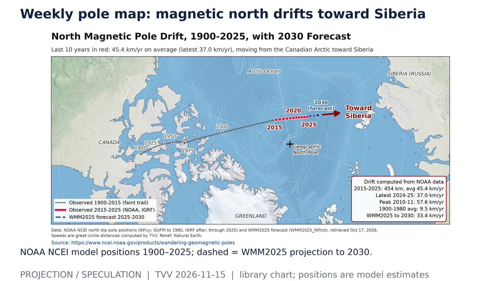
Weekly pole map: magnetic north drifts toward Siberia. NOAA historical models 1900–2025; WMM2025 projection to 2030 (dashed). Library chart, data retrieved Oct 17.
Source: https://www.ncei.noaa.gov/products/wandering-geomagnetic-poles
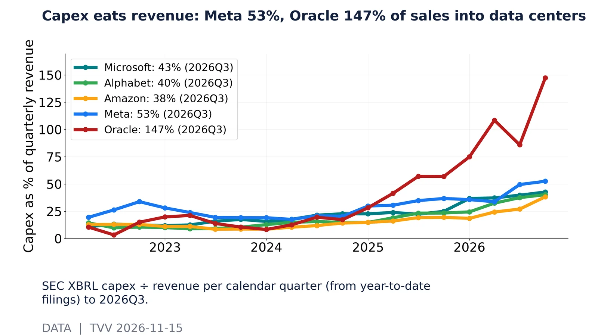
Capex eats revenue: Meta 53%, Oracle 147% of sales into data centers. SEC XBRL capex ÷ revenue per calendar quarter (from year-to-date filings) to 2026Q3.
Source: https://data.sec.gov/api/xbrl/companyfacts/CIK0001326801.json
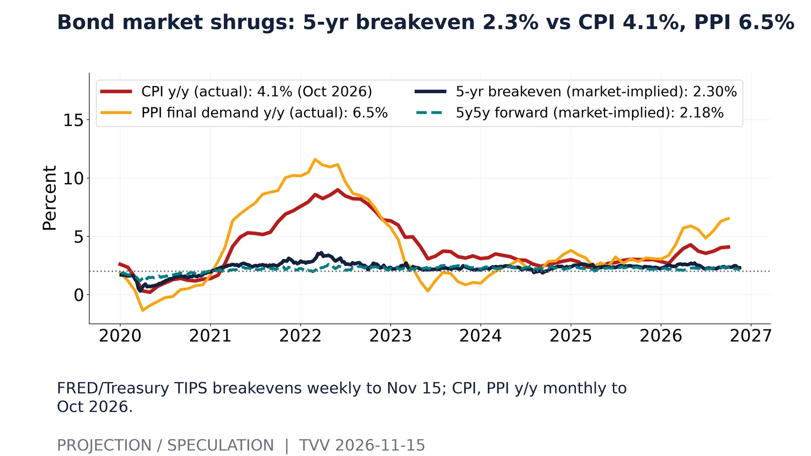
Bond market shrugs: 5-yr breakeven 2.3% vs CPI 4.1%, PPI 6.5%. FRED/Treasury TIPS breakevens weekly to Nov 15; CPI, PPI y/y monthly to Oct 2026.
Source: https://fred.stlouisfed.org/graph/fredgraph.csv?id=T5YIE
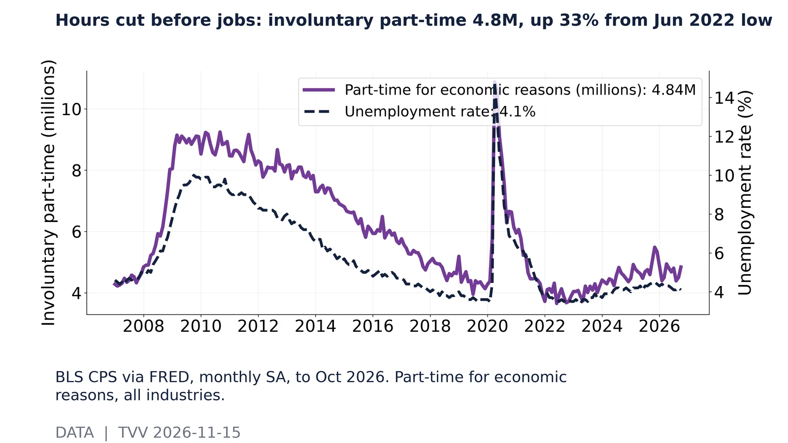
Hours cut before jobs: involuntary part-time 4.8M, up 33% from Jun 2022 low. BLS CPS via FRED, monthly SA, to Oct 2026. Part-time for economic reasons, all industries.
Source: https://fred.stlouisfed.org/graph/fredgraph.csv?id=LNS12032194
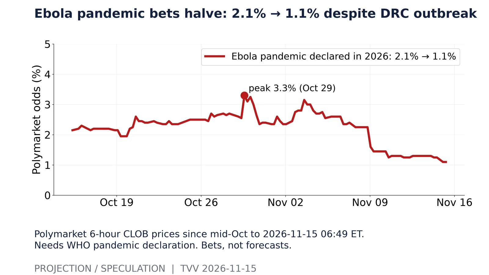
Ebola pandemic bets halve: 2.1% → 1.1% despite DRC outbreak. Polymarket 6-hour CLOB prices since mid-Oct to 2026-11-15 06:49 ET. Needs WHO pandemic declaration. Bets, not forecasts.
Source: https://polymarket.com/event/ebola-pandemic-in-2026
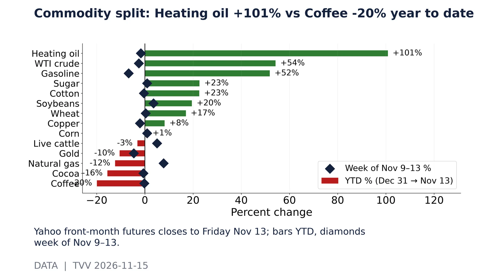
Commodity split: Heating oil +101% vs Coffee -20% year to date. Yahoo front-month futures closes to Friday Nov 13; bars YTD, diamonds week of Nov 9–13.
Source: https://query1.finance.yahoo.com/v8/finance/chart/CC=F?range=2y&interval=1d
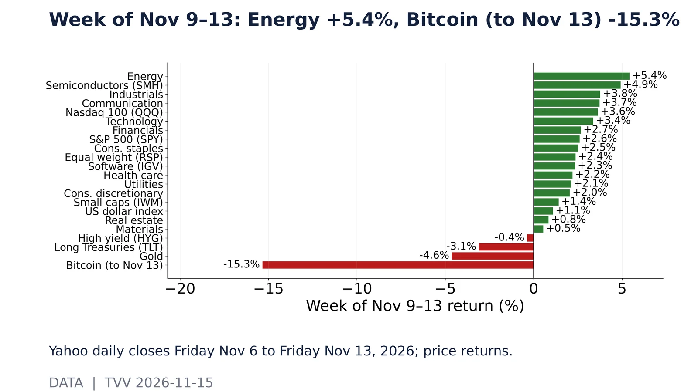
Week of Nov 9–13: Energy +5.4%, Bitcoin (to Nov 13) -15.3%. Yahoo daily closes Friday Nov 6 to Friday Nov 13, 2026; price returns.
Source: https://query1.finance.yahoo.com/v8/finance/chart/SPY?range=2y&interval=1d
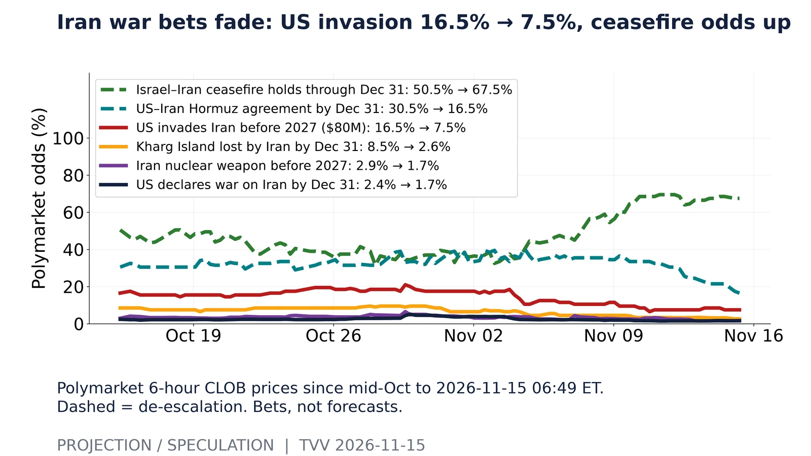
Iran war bets fade: US invasion 16.5% → 7.5%, ceasefire odds up. Polymarket 6-hour CLOB prices since mid-Oct to 2026-11-15 06:49 ET. Dashed = de-escalation. Bets, not forecasts.
Source: https://polymarket.com/event/will-the-us-invade-iran-before-2027
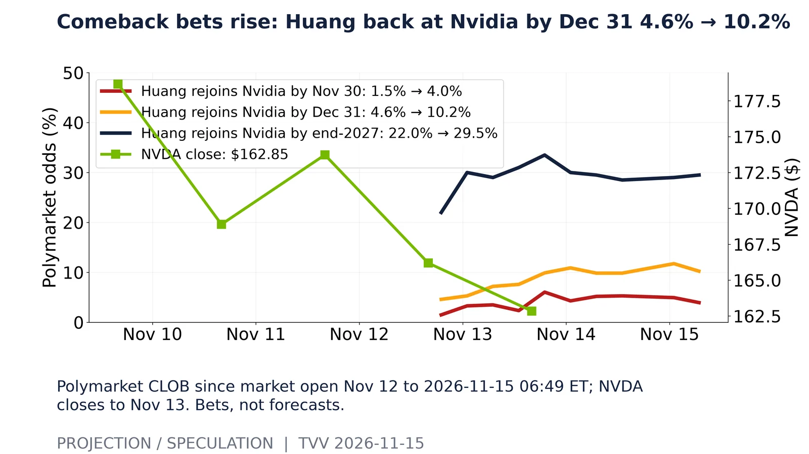
Comeback bets rise: Huang back at Nvidia by Dec 31 4.6% → 10.2%. Polymarket CLOB since market open Nov 12 to 2026-11-15 06:49 ET; NVDA closes to Nov 13. Bets, not forecasts.
Source: https://polymarket.com/event/jensen-huang-rejoins-nvidia-byptptpt
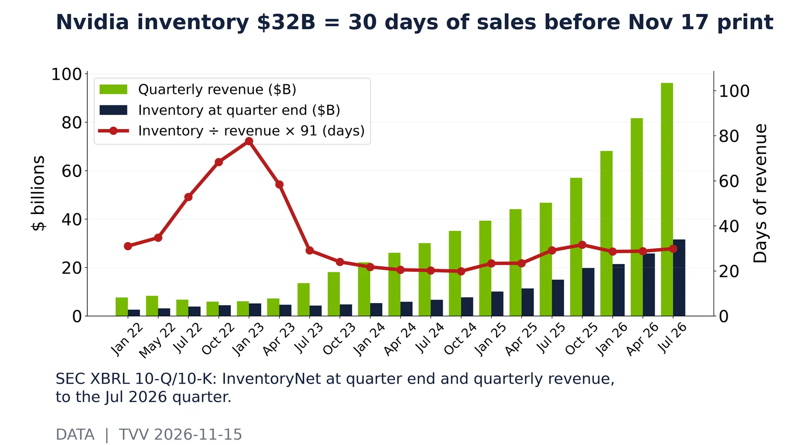
Nvidia inventory $32B = 30 days of sales before Nov 17 print. SEC XBRL 10-Q/10-K: InventoryNet at quarter end and quarterly revenue, to the Jul 2026 quarter.
Source: https://data.sec.gov/api/xbrl/companyfacts/CIK0001045810.json
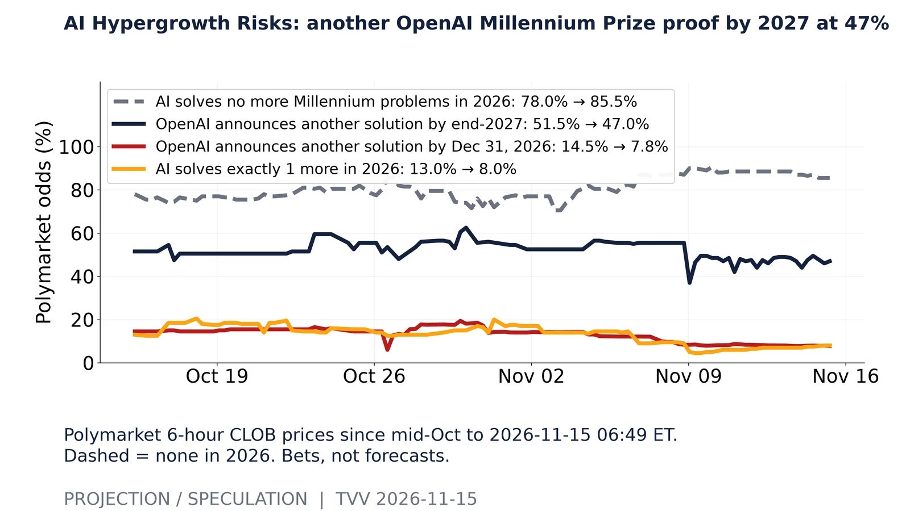
AI Hypergrowth Risks: another OpenAI Millennium Prize proof by 2027 at 47%. Polymarket 6-hour CLOB prices since mid-Oct to 2026-11-15 06:49 ET. Dashed = none in 2026. Bets, not forecasts.
Source: https://polymarket.com/event/openai-announces-another-millennium-prize-solution-by